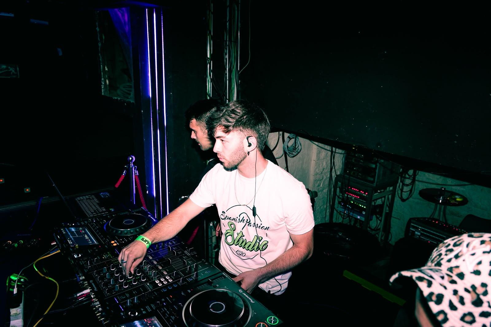
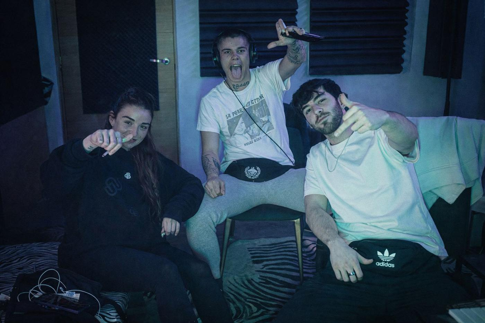

Prod.Vupp · Sierra de Madrid
Vupp.
0M+
Escuchas totales
0K+
Oyentes mensuales · Spotify
Productor
Beatmaker
Ingeniero de Mix y Máster
Trayectoria
De técnico a productor.
Origen
Ocho años de beatmaking autodidacta, sin escuela ni atajos. Empecé como técnico de sonido y ese camino, paso a paso, me convirtió en productor de referencia en la Sierra de Madrid.
Hoy
Produzco, grabo, mezclo y masterizo en el estudio que he montado desde cero en Las Rozas de Madrid. He colaborado con artistas consolidados del panorama urbano, y como DJ he mezclado en directo en festivales como el Rocanrola o eventos como la Vulkan.
Servicios
Tres formas de trabajar juntos.
01
Producción de instrumental personalizada
Un beat pensado para tu voz. No genérico.
Consigue tu instrumental →
Colaboraciones
Cada artista, su propio sonido.
Trabajo con artistas y creadores del ecosistema urbano con un criterio estricto.
- Químico Ultramega
- Ardo440
- Grecas284
- Jime
- Al Safir
- Los Niños del Caminito
- Krisan
- NastaHB
Y muchos otros más...